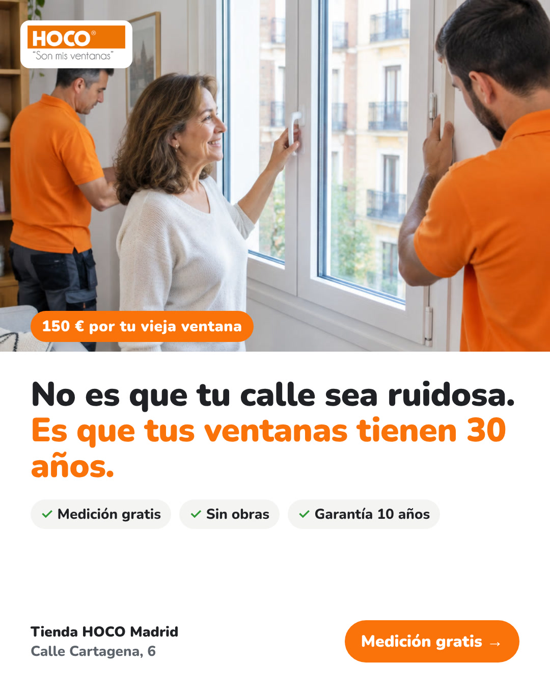
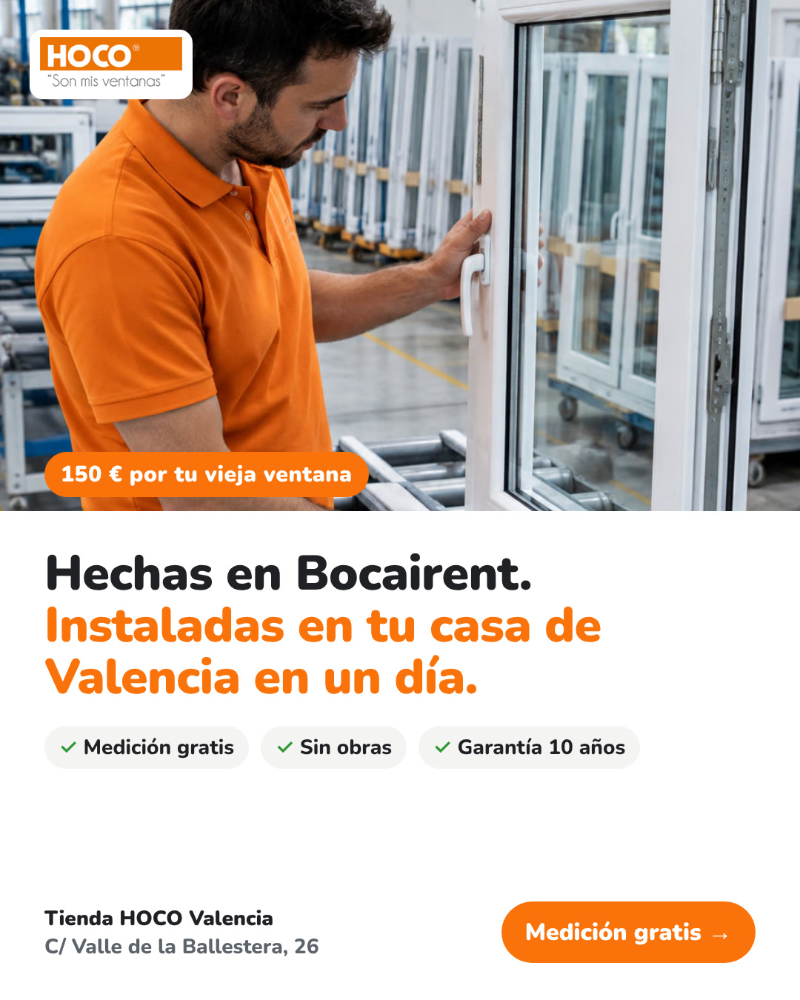
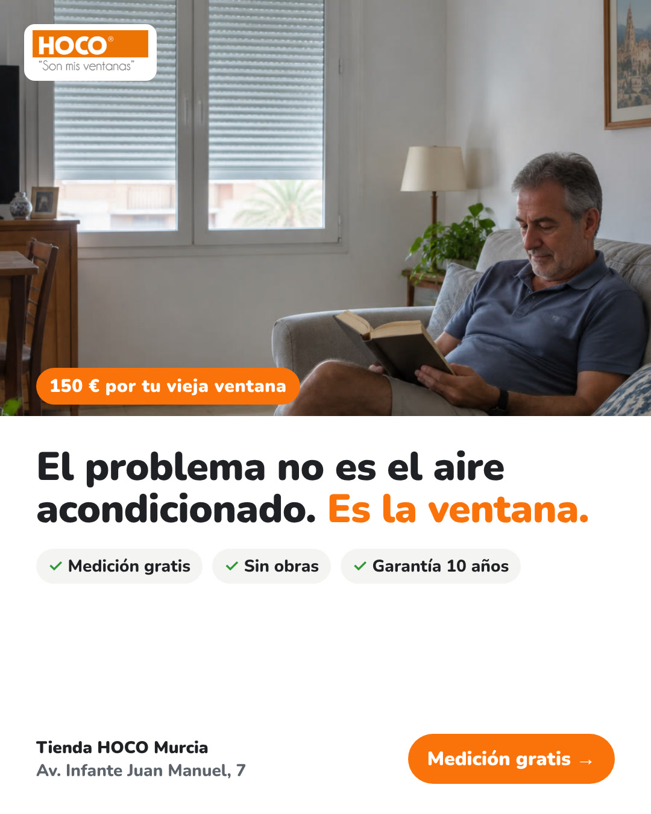
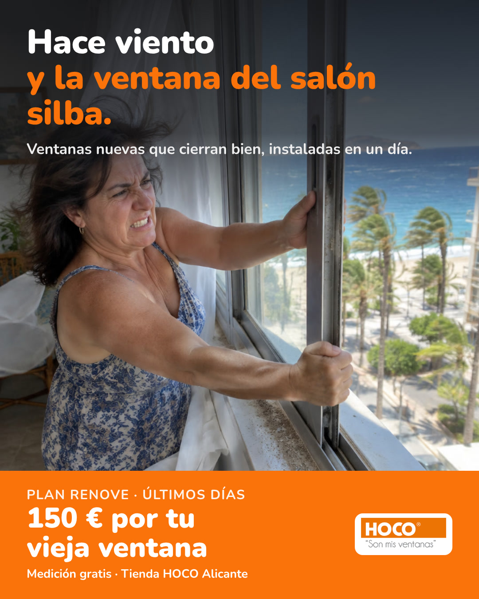
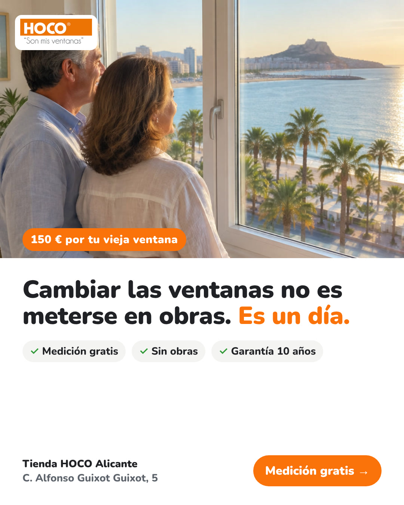

Anuncios por tienda: tres mensajes para saber cuál trae más entradas
Cada tienda tiene tres estáticos para el feed (4:5) y una story (9:16). Valencia y Murcia tienen también un vídeo hecho con Kling. Todos llevan la promo del Plan Renove, la tienda y su dirección, y cada uno lleva a la landing de su tienda.
Una escena que el vecino reconoce: la moto a las 23:40, el salón a 29 °C, la ventana que silba. Pregunta: ¿el dolor de la zona hace parar el scroll?
«Tus ventanas viejas valen 150 € cada una», con la tabla 2-4-6 ventanas. Pregunta: ¿la promo sola convierte mejor que el problema?
«El problema no es el aire acondicionado. Es la ventana.» Pregunta: ¿cambiar la idea que tiene en la cabeza trae entradas de más calidad?
Madrid
Calle Cartagena, 6 · landing: qualivo.io/propuestas/hoco/madrid/

Copy de Meta para Madrid
Texto principal
¿Oyes la calle desde la cama? En muchas fincas de Madrid las ventanas tienen 30 años y por ahí entra el ruido (y se escapa la calefacción). En HOCO cambiamos tus ventanas en un solo día y sin obras. Y ahora, con el Plan Renove, te damos 150 € por cada ventana vieja. ✓ Medición gratis en casa, sin compromiso ✓ Fabricamos nosotros: garantía de 10 años 📍 Tienda HOCO Madrid · Calle Cartagena, 6
Título
Tu ventana vieja vale 150 €
Descripción
Medición gratis · Tienda HOCO Madrid
Botón
Más información
Valencia
C/ Valle de la Ballestera, 26 · landing: qualivo.io/propuestas/hoco/valencia/

Copy de Meta para Valencia
Texto principal
Agosto, el aire a tope y la casa sigue caliente. Muchas veces el problema está en las ventanas. En HOCO las fabricamos en Bocairent y las instalamos en tu casa de Valencia en un solo día, sin obras. Con el Plan Renove, 150 € por cada ventana vieja. ✓ Medición gratis en casa, sin compromiso ✓ Garantía de 10 años 📍 Tienda HOCO Valencia · C/ Valle de la Ballestera, 26
Título
Tu ventana vieja vale 150 €
Descripción
Medición gratis · Tienda HOCO Valencia
Botón
Más información
Murcia
Av. Infante Juan Manuel, 7 · landing: qualivo.io/propuestas/hoco/murcia/

Copy de Meta para Murcia
Texto principal
El problema no es el aire acondicionado. Es la ventana. Si el sol de la tarde convierte tu casa en un horno, el aire nunca da abasto. En HOCO cambiamos tus ventanas en un solo día y sin obras. Con el Plan Renove, 150 € por cada ventana vieja. ✓ Medición gratis en casa, sin compromiso ✓ Fabricamos nosotros: garantía de 10 años 📍 Tienda HOCO Murcia · Av. Infante Juan Manuel, 7
Título
Tu ventana vieja vale 150 €
Descripción
Medición gratis · Tienda HOCO Murcia
Botón
Más información
Alicante
C. Alfonso Guixot Guixot, 5 · landing: qualivo.io/propuestas/hoco/alicante/


Copy de Meta para Alicante
Texto principal
¿Tu ventana silba con el viento y ya no cierra bien? Calor, ruido y polvo entran por el mismo sitio. En HOCO cambiamos tus ventanas en un solo día y sin obras, en Alicante y Elche. Con el Plan Renove, 150 € por cada ventana vieja. ✓ Medición gratis en casa, sin compromiso ✓ Fabricamos nosotros: garantía de 10 años 📍 Tienda HOCO Alicante · C. Alfonso Guixot Guixot, 5
Título
Tu ventana vieja vale 150 €
Descripción
Medición gratis · Tienda HOCO Alicante
Botón
Más información
Cómo lo testeamos
| Qué | Cómo |
|---|---|
| Estructura | Una campaña por tienda, con su radio y su presupuesto. Dentro, los mismos tres anuncios (A, B, C) con la misma landing, el mismo público y el mismo formulario. Solo cambia el mensaje. |
| Público | 45+ propietarios, radio de la tienda (1-2 km en Madrid, algo más amplio en Valencia, Murcia y Alicante-Elche). Abierto en intereses: que trabaje el creativo. |
| Primeras 2 semanas | Ver qué mensaje para el scroll (retención 3 s, CTR) y cuál pasa del clic al formulario. No apagar nada antes de 1.500-2.000 impresiones por anuncio. |
| Qué decide | No el coste por formulario, sino el coste por entrada válida en Dynamics: contacto con teléfono correcto, en la zona, que acepta la medición. Un anuncio más caro por formulario puede ganar si trae más mediciones. |
| Después | El mensaje que gane en cada tienda se queda y se le hacen 3 ganchos nuevos sobre la misma idea. El que pierda se sustituye. El vídeo se prueba contra el mejor estático. |
Pendiente antes de publicar
- Las fotos y los vídeos son generados con IA para enseñar la idea. Lo ideal es grabar en cada tienda con su equipo y en casas reales de clientes (con su permiso).
- Condiciones y fecha de fin del Plan Renove.
- Validar los textos técnicos (aislamiento acústico, térmico) con HOCO.
- Vídeos de Madrid y Alicante: se preparan con el mismo formato si os encaja la línea.